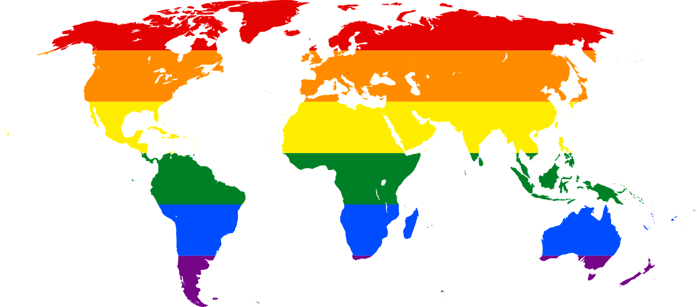
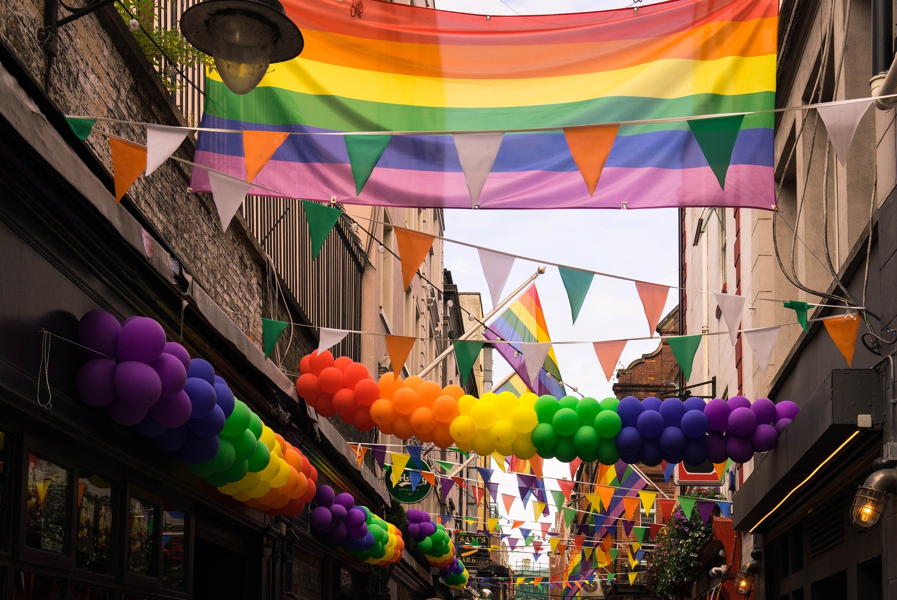

Die REGENBOGENFLAGGE als Zeichen für Vielfalt

Diese bunte Flagge hast du bestimmt schon mal gesehen? KABU erklärt dir heute, welche wichtige Botschaft eigentlich dahintersteckt.
Die Regenbogenflagge ist seit mehr als 40 Jahren in vielen Ländern ein Zeichen für die Vielfalt der Menschen und soll an mehr Toleranz untereinander erinnern. Das bedeutet, dass man Menschen, nur, weil sie anders sind als man selbst, trotzdem so leben lassen soll, wie sie es möchten. In diesem Sinne ruft die Flagge auch zu einem friedlichen Miteinander auf.

Jedes Jahr im Juni wird diese Vielfalt der Gesellschaft gefeiert. Das bedeutet, dass man im Juni daran erinnern möchte, dass alle Menschen gleich viel wert sind, egal aus welchem Land sie kommen oder wen sie lieben. Denn jeder Mensch ist anders und darf so sein wie er es will. Es ist also egal, ob
- ein Mensch eine helle oder dunkle Hautfarbe hat.
- eine Person braune, grüne oder blaue Augen hat.
- jemand aus Afrika, Amerika, Asien, Australien oder Europa kommt.
- ein Mann mit einer Frau oder einem anderen Mann zusammen ist.
- eine Frau einen Mann oder eine andere Frau liebt.
- sich ein Mensch vorstellen kann, entweder mit einem Mann oder einer Frau zu leben.
- sich ein Mensch als Frau fühlt, obwohl er als Junge geboren wurde.
- sich ein Mensch als Mann fühlt, obwohl er als Mädchen geboren wurde.
- sich ein Mensch weder als Frau noch als Mann fühlt.
- ein Mann „Frauenkleidung“ anzieht.
- eine Frau „Männerkleidung“ trägt.
Das einzige, was zählt, ist einfach immer nur: „Jeder Mensch darf sich wohlfühlen und so sein, wie er ist, ohne sich verstellen zu müssen!“

In den letzten Jahren setzen sich immer mehr Menschen für eine gerechte Welt ein und setzen ein Zeichen für Vielfalt und Toleranz. Das hat man auch bei der aktuellen Fußball-Europameisterschaft im Männerfußball gesehen, wo viele Fans und Städte Flagge zeigten – und zwar die Regenbogenflagge!
Sei auch du tolerant und akzeptiere andere so wie sie sind! Dadurch hilfst du, dass viele Menschen ein glückliches Leben führen können und keine Angst davor haben müssen, ausgegrenzt zu werden.
Denk bunt und merk dir am besten den Spruch: Niemand ist „anders“, denn nichts ist „normal“! Und erinnre auch andere Menschen immer wieder daran!
Viele bunte Grüße von deinem KABU-Team!